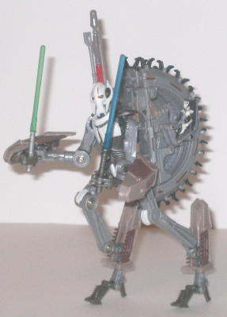
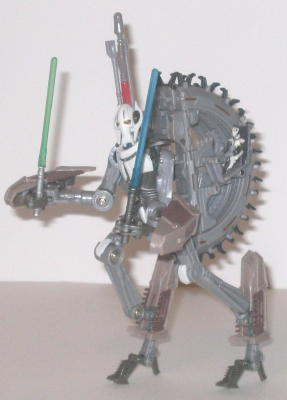

Grevious' 'Mech's alt
mode is a wheelbike. Now, I haven't seen most of Episode III, so I can't
say personally whether it's exceedingly accurate to the movie version or
not, and the actual wheel can't move, of course, due to the transformation,
but it looks pretty cool regardless. The "skeletal wheel on legs" look
it has going is really cool, and it tends to hold itself up fairly well
in this mode, assuming you don't spread the legs too wide or anything.
There are a few extras in this mode, though none of them are really crippling;
the robot hands stick out of the front two legs a little, and the robot
head is visible near the underside if you look at the vehicle mode head-on.
This mode also has an aimable missile launcher on the right side of the
main wheel assembly, and the missile can become a third lightsaber in robot
mode (though I'm not sure why he'd NEED a third lightsaber, since he only
has two hands in robot mode). The other two lightsabers-- one blue and
one green-- are stored in the middle of the wheel assembly in this mode,
which becomes a small cavity in the back in robot mode. There's also a
little seat on the other side of the main wheel assembly, with a little
Grevious figure that you can plop down in it.
Grevious' 'Mech mode
looks quite a lot like the actual character, with some vehcile extras on
his back and lower arms. The skinny appendages, the chicken-walker-like
legs-- the 'Mech head and torso especially, are pretty much spot-on with
the actual General Grevious. The proportions are pretty much right-on for
a 'Mech character such as this, and the articulation is great-- Grevious
can move at the head, shoulders, elbows (at two points) wrists, bottoms
of his various fingers (two as a whole on each hand, another four as a
whole on each hand-- he has rather oddly-placed fingers, which I assume
his character in the movie had as well), hips, knees (at two points), ankles
(at two points), and at the tops of his heels and his two toes (as a whole
on each foot). I also like how the little "claws" on the wheel on his back
mesh together so well, it really looks cool and actually complements this
mode a bit, like Grevious' 'Mech has some kind of spiky turtle shell on
it or something. There are some rather annoying downsides to this mode,
however, the most noticeable being that the pegs that hold Grevious' upper
legs together pop out too easily, especially during transformation. They're
still stable enough to support his weight, and you'll get used to how to
hold and pose his legs correctly after a while, but it's still rather annoying.
It's also very hard to get Grevious to stand up by himself, given his small
feet and odd leg posture. Another, less major, downside is that Grevious
can't hold his lightsabers in his hands as well as most other Star Wars
TFs-- they tend to slide out from his hands too easily, as there's no pegs
or anything to hold them to the hands.
General Grevious is
one of the best Star Wars TFs there are-- in fact, THE best-looking I've
seen, as of this writing (3/06), especially in robot mode. He does suffer
from some definite stability issues, though, and doesn't hold together
as well as many other Star Wars TFs. So although he's definitely not for
little kids, if you don't mind being moderately careful with a toy, I'd
highly recommend him.
Review by Beastbot